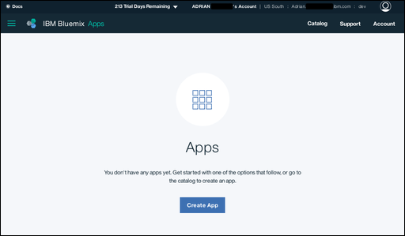
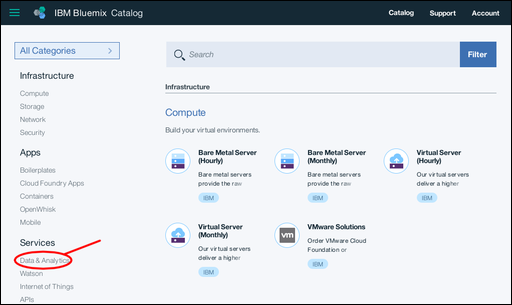
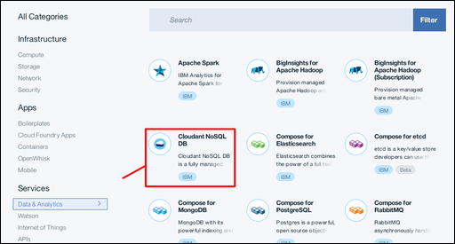
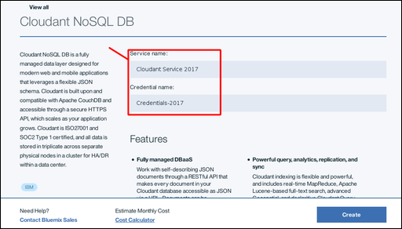
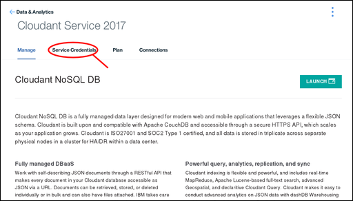
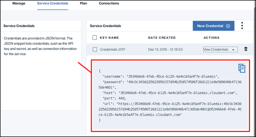
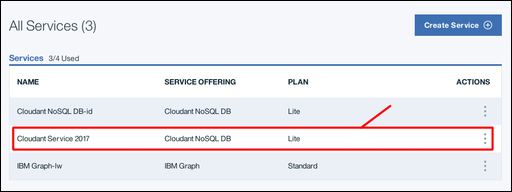

Creating a Cloudant instance on Bluemix
This tutorial shows you how to create an IBM® Cloudant® NoSQL DB for Bluemix® service instance on Bluemix, and shows you where to find the essential information to enable your applications to work with the database.
To access a Cloudant NoSQL DB service instance, you require a set of Service Credentials. The credentials are generated as part of the process when you create a service instance.
You can also find these credentials at any time, by accessing your Cloudant NoSQL DB account.
Creating a service instance
-
Log in to your Bluemix account.
The Bluemix dashboard can be found at:
http://bluemix.net  . After authenticating with your user name and password, you are presented with the Bluemix
dashboard:
. After authenticating with your user name and password, you are presented with the Bluemix
dashboard:

-
Click the Catalog link:

A list of the services available on Bluemix appears.
-
Click the Data & Analytics entry under the Services heading:

A list of the Data & Analytics services available on Bluemix appears.
-
Click the Cloudant NoSQL DB service:

-
In the service configuration window, enter a service name and a credential name. In this example, the service name is Cloudant Service 2017, and the credential name is Credentials-2017:

-
By default, the service is created by using the 'Lite' pricing plan, which is free but offers limited capacity. Other pricing plans, with greater capacity,
are available.
To create the service, click the Create button:

-
A service page appears, confirming that your new Cloudant NoSQL DB service is available. To access the connection information that your application needs to connect to the service, click the Service Credentials tab:

-
The Service Credentials window appears. To see the credentials that are required to access the service, click the View Credentials dropdown:

-
The Service Credentials details appear:

Note: The service credentials in these examples were defined when a demonstration Cloudant service was created on Bluemix. The credentials are reproduced here to show how they would appear in the dashboard. However, the demonstration
Cloudant service was removed, so these credentials are no longer valid; you must supply and use your own service credentials.
The service credentials
Note: Service credentials are valuable. If anyone or any application has access to the credentials, they can effectively do whatever they want with the service instance, for example they might create spurious data, or delete valuable
information. Protect these credentials carefully.
The service credentials consist of five fields:
| Field |
Purpose |
host |
The host name that is used by applications to locate the service instance. |
username |
The user name that is required for applications to access the service instance. |
password |
The password that is required for applications to access the service instance. |
port |
The HTTP port number for accessing the service instance on the host. Normally 443 to force HTTPS access. |
url |
A string aggregating the other credential information into a single URL, suitable for use by applications. |
To create an application that can access your service instance, you need these credentials.
Locating your service credentials
At any time, you can find the credentials for a service that is associated with your account.
-
Begin by logging in to Bluemix. The IBM® Bluemix® dashboard can be found at:
http://bluemix.net . After authenticating with your user name and password, you are presented with the Bluemix
dashboard:
-
Scroll down the Dashboard, until you reach the section that lists all your services:

-
In this example, we want to find the service credentials for the Cloudant NoSQL DB service instance that was created earlier in the tutorial, called Cloudant Service 2017. Click the corresponding row:

-
The Service Credentials window appears. To see the credentials that are required to access the service, click the View Credentials dropdown:
-
The Service Credentials details appear:
Note: The service credentials in these examples were defined when a demonstration Cloudant service was created on Bluemix. The credentials are reproduced here to show how they would appear in the dashboard. However, the demonstration
Cloudant service was removed, so these credentials are no longer valid; you must supply and use your own service credentials.